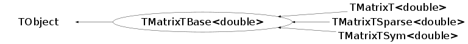

class TMatrixTBase<double>: public TObject
Linear Algebra Package The present package implements all the basic algorithms dealing with vectors, matrices, matrix columns, rows, diagonals, etc. In addition eigen-Vector analysis and several matrix decomposition have been added (LU,QRH,Cholesky,Bunch-Kaufman and SVD) . The decompositions are used in matrix inversion, equation solving. For a dense matrix, elements are arranged in memory in a ROW-wise fashion . For (n x m) matrices where n*m <=kSizeMax (=25 currently) storage space is available on the stack, thus avoiding expensive allocation/deallocation of heap space . However, this introduces of course kSizeMax overhead for each matrix object . If this is an issue recompile with a new appropriate value (>=0) for kSizeMax Sparse matrices are also stored in row-wise fashion but additional row/column information is stored, see TMatrixTSparse source for additional details . Another way to assign and store matrix data is through Use see for instance stressLinear.cxx file . Unless otherwise specified, matrix and vector indices always start with 0, spanning up to the specified limit-1. However, there are constructors to which one can specify aribtrary lower and upper bounds, e.g. TMatrixD m(1,10,1,5) defines a matrix that ranges from 1..10, 1..5 (a(1,1)..a(10,5)). The present package provides all facilities to completely AVOID returning matrices. Use "TMatrixD A(TMatrixD::kTransposed,B);" and other fancy constructors as much as possible. If one really needs to return a matrix, return a TMatrixTLazy object instead. The conversion is completely transparent to the end user, e.g. "TMatrixT m = THaarMatrixT(5);" and _is_ efficient. Since TMatrixT et al. are fully integrated in ROOT, they of course can be stored in a ROOT database. For usage examples see $ROOTSYS/test/stressLinear.cxx Acknowledgements 1. Oleg E. Kiselyov First implementations were based on the his code . We have diverged quite a bit since then but the ideas/code for lazy matrix and "nested function" are 100% his . You can see him and his code in action at http://okmij.org/ftp 2. Chris R. Birchenhall, We adapted his idea of the implementation for the decomposition classes instead of our messy installation of matrix inversion His installation of matrix condition number, using an iterative scheme using the Hage algorithm is worth looking at ! Chris has a nice writeup (matdoc.ps) on his matrix classes at ftp://ftp.mcc.ac.uk/pub/matclass/ 3. Mark Fischler and Steven Haywood of CLHEP They did the slave labor of spelling out all sub-determinants for Cramer inversion of (4x4),(5x5) and (6x6) matrices The stack storage for small matrices was also taken from them 4. Roldan Pozo of TNT (http://math.nist.gov/tnt/) He converted the EISPACK routines for the eigen-vector analysis to C++ . We started with his implementation 5. Siegmund Brandt (http://siux00.physik.uni-siegen.de/~brandt/datan We adapted his (very-well) documented SVD routines How to efficiently use this package 1. Never return complex objects (matrices or vectors) Danger: For example, when the following snippet: TMatrixD foo(int n) { TMatrixD foom(n,n); fill_in(foom); return foom; } TMatrixD m = foo(5); runs, it constructs matrix foo:foom, copies it onto stack as a return value and destroys foo:foom. Return value (a matrix) from foo() is then copied over to m (via a copy constructor), and the return value is destroyed. So, the matrix constructor is called 3 times and the destructor 2 times. For big matrices, the cost of multiple constructing/copying/destroying of objects may be very large. *Some* optimized compilers can cut down on 1 copying/destroying, but still it leaves at least two calls to the constructor. Note, TMatrixDLazy (see below) can construct TMatrixD m "inplace", with only a _single_ call to the constructor. 2. Use "two-address instructions" "void TMatrixD::operator += (const TMatrixD &B);" as much as possible. That is, to add two matrices, it's much more efficient to write A += B; than TMatrixD C = A + B; (if both operand should be preserved, TMatrixD C = A; C += B; is still better). 3. Use glorified constructors when returning of an object seems inevitable: "TMatrixD A(TMatrixD::kTransposed,B);" "TMatrixD C(A,TMatrixD::kTransposeMult,B);" like in the following snippet (from $ROOTSYS/test/vmatrix.cxx) that verifies that for an orthogonal matrix T, T'T = TT' = E. TMatrixD haar = THaarMatrixD(5); TMatrixD unit(TMatrixD::kUnit,haar); TMatrixD haar_t(TMatrixD::kTransposed,haar); TMatrixD hth(haar,TMatrixD::kTransposeMult,haar); TMatrixD hht(haar,TMatrixD::kMult,haar_t); TMatrixD hht1 = haar; hht1 *= haar_t; VerifyMatrixIdentity(unit,hth); VerifyMatrixIdentity(unit,hht); VerifyMatrixIdentity(unit,hht1); 4. Accessing row/col/diagonal of a matrix without much fuss (and without moving a lot of stuff around): TMatrixD m(n,n); TVectorD v(n); TMatrixDDiag(m) += 4; v = TMatrixDRow(m,0); TMatrixDColumn m1(m,1); m1(2) = 3; // the same as m(2,1)=3; Note, constructing of, say, TMatrixDDiag does *not* involve any copying of any elements of the source matrix. 5. It's possible (and encouraged) to use "nested" functions For example, creating of a Hilbert matrix can be done as follows: void foo(const TMatrixD &m) { TMatrixD m1(TMatrixD::kZero,m); struct MakeHilbert : public TElementPosActionD { void Operation(Double_t &element) { element = 1./(fI+fJ-1); } }; m1.Apply(MakeHilbert()); } of course, using a special method THilbertMatrixD() is still more optimal, but not by a whole lot. And that's right, class MakeHilbert is declared *within* a function and local to that function. It means one can define another MakeHilbert class (within another function or outside of any function, that is, in the global scope), and it still will be OK. Note, this currently is not yet supported by the interpreter CINT. Another example is applying of a simple function to each matrix element: void foo(TMatrixD &m,TMatrixD &m1) { typedef double (*dfunc_t)(double); class ApplyFunction : public TElementActionD { dfunc_t fFunc; void Operation(Double_t &element) { element=fFunc(element); } public: ApplyFunction(dfunc_t func):fFunc(func) {} }; ApplyFunction x(TMath::Sin); m.Apply(x); } Validation code $ROOTSYS/test/vmatrix.cxx and vvector.cxx contain a few more examples of that kind. 6. Lazy matrices: instead of returning an object return a "recipe" how to make it. The full matrix would be rolled out only when and where it's needed: TMatrixD haar = THaarMatrixD(5); THaarMatrixD() is a *class*, not a simple function. However similar this looks to a returning of an object (see note #1 above), it's dramatically different. THaarMatrixD() constructs a TMatrixDLazy, an object of just a few bytes long. A special "TMatrixD(const TMatrixDLazy &recipe)" constructor follows the recipe and makes the matrix haar() right in place. No matrix element is moved whatsoever!
This class is also known as (typedefs to this class)
TMatrixTBase<Double_t>, TMatrixDBaseFunction Members (Methods)
This is an abstract class, constructors will not be documented.
Look at the header to check for available constructors.
public:
| virtual | ~TMatrixTBase<double>() |
| virtual TMatrixTBase<double>& | Abs() |
| void | TObject::AbstractMethod(const char* method) const |
| virtual void | TObject::AppendPad(Option_t* option = "") |
| virtual TMatrixTBase<double>& | Apply(const TElementActionT<double>& action) |
| virtual TMatrixTBase<double>& | Apply(const TElementPosActionT<double>& action) |
| virtual void | TObject::Browse(TBrowser* b) |
| static TClass* | Class() |
| virtual const char* | TObject::ClassName() const |
| virtual void | Clear(Option_t* option = "") |
| virtual TObject* | TObject::Clone(const char* newname = "") const |
| virtual double | ColNorm() const |
| virtual Int_t | TObject::Compare(const TObject* obj) const |
| virtual void | TObject::Copy(TObject& object) const |
| virtual void | TObject::Delete(Option_t* option = "")MENU |
| virtual Double_t | Determinant() const |
| virtual void | Determinant(Double_t& d1, Double_t& d2) const |
| virtual Int_t | TObject::DistancetoPrimitive(Int_t px, Int_t py) |
| virtual void | Draw(Option_t* option = "")MENU |
| virtual void | TObject::DrawClass() constMENU |
| virtual TObject* | TObject::DrawClone(Option_t* option = "") constMENU |
| virtual void | TObject::Dump() constMENU |
| virtual double | E2Norm() const |
| virtual void | TObject::Error(const char* method, const char* msgfmt) const |
| virtual void | TObject::Execute(const char* method, const char* params, Int_t* error = 0) |
| virtual void | TObject::Execute(TMethod* method, TObjArray* params, Int_t* error = 0) |
| virtual void | TObject::ExecuteEvent(Int_t event, Int_t px, Int_t py) |
| virtual void | ExtractRow(Int_t row, Int_t col, double* v, Int_t n = -1) const |
| virtual void | TObject::Fatal(const char* method, const char* msgfmt) const |
| virtual TObject* | TObject::FindObject(const char* name) const |
| virtual TObject* | TObject::FindObject(const TObject* obj) const |
| virtual const Int_t* | GetColIndexArray() const |
| virtual Int_t* | GetColIndexArray() |
| Int_t | GetColLwb() const |
| Int_t | GetColUpb() const |
| virtual Option_t* | TObject::GetDrawOption() const |
| static Long_t | TObject::GetDtorOnly() |
| virtual const char* | TObject::GetIconName() const |
| virtual void | GetMatrix2Array(double* data, Option_t* option = "") const |
| virtual const double* | GetMatrixArray() const |
| virtual double* | GetMatrixArray() |
| virtual const char* | TObject::GetName() const |
| Int_t | GetNcols() const |
| Int_t | GetNoElements() const |
| Int_t | GetNrows() const |
| virtual char* | TObject::GetObjectInfo(Int_t px, Int_t py) const |
| static Bool_t | TObject::GetObjectStat() |
| virtual Option_t* | TObject::GetOption() const |
| virtual const Int_t* | GetRowIndexArray() const |
| virtual Int_t* | GetRowIndexArray() |
| Int_t | GetRowLwb() const |
| Int_t | GetRowUpb() const |
| virtual TMatrixTBase<double>& | GetSub(Int_t row_lwb, Int_t row_upb, Int_t col_lwb, Int_t col_upb, TMatrixTBase<double>& target, Option_t* option = "S") const |
| virtual const char* | TObject::GetTitle() const |
| double | GetTol() const |
| virtual UInt_t | TObject::GetUniqueID() const |
| virtual Bool_t | TObject::HandleTimer(TTimer* timer) |
| virtual ULong_t | TObject::Hash() const |
| virtual void | TObject::Info(const char* method, const char* msgfmt) const |
| virtual Bool_t | TObject::InheritsFrom(const char* classname) const |
| virtual Bool_t | TObject::InheritsFrom(const TClass* cl) const |
| virtual TMatrixTBase<double>& | InsertRow(Int_t row, Int_t col, const double* v, Int_t n = -1) |
| virtual void | TObject::Inspect() constMENU |
| void | Invalidate() |
| void | TObject::InvertBit(UInt_t f) |
| virtual TClass* | IsA() const |
| virtual Bool_t | TObject::IsEqual(const TObject* obj) const |
| virtual Bool_t | TObject::IsFolder() const |
| Bool_t | TObject::IsOnHeap() const |
| Bool_t | IsOwner() const |
| virtual Bool_t | TObject::IsSortable() const |
| virtual Bool_t | IsSymmetric() const |
| Bool_t | IsValid() const |
| Bool_t | TObject::IsZombie() const |
| virtual void | TObject::ls(Option_t* option = "") const |
| void | MakeValid() |
| virtual double | Max() const |
| void | TObject::MayNotUse(const char* method) const |
| virtual double | Min() const |
| virtual Int_t | NonZeros() const |
| double | Norm1() const |
| virtual TMatrixTBase<double>& | NormByDiag(const TVectorT<double>& v, Option_t* option = "D") |
| double | NormInf() const |
| virtual Bool_t | TObject::Notify() |
| void | TObject::Obsolete(const char* method, const char* asOfVers, const char* removedFromVers) const |
| static void | TObject::operator delete(void* ptr) |
| static void | TObject::operator delete(void* ptr, void* vp) |
| static void | TObject::operator delete[](void* ptr) |
| static void | TObject::operator delete[](void* ptr, void* vp) |
| void* | TObject::operator new(size_t sz) |
| void* | TObject::operator new(size_t sz, void* vp) |
| void* | TObject::operator new[](size_t sz) |
| void* | TObject::operator new[](size_t sz, void* vp) |
| Bool_t | operator!=(double val) const |
| virtual double | operator()(Int_t rown, Int_t coln) const |
| virtual double& | operator()(Int_t rown, Int_t coln) |
| Bool_t | operator<(double val) const |
| Bool_t | operator<=(double val) const |
| TMatrixTBase<double>& | operator=(const TMatrixTBase<double>&) |
| Bool_t | operator==(double val) const |
| Bool_t | operator>(double val) const |
| Bool_t | operator>=(double val) const |
| virtual void | TObject::Paint(Option_t* option = "") |
| virtual void | TObject::Pop() |
| virtual void | Print(Option_t* name = "") constMENU |
| virtual TMatrixTBase<double>& | Randomize(double alpha, double beta, Double_t& seed) |
| virtual Int_t | TObject::Read(const char* name) |
| virtual void | TObject::RecursiveRemove(TObject* obj) |
| void | TObject::ResetBit(UInt_t f) |
| virtual TMatrixTBase<double>& | ResizeTo(Int_t nrows, Int_t ncols, Int_t nr_nonzeros = -1) |
| virtual TMatrixTBase<double>& | ResizeTo(Int_t row_lwb, Int_t row_upb, Int_t col_lwb, Int_t col_upb, Int_t nr_nonzeros = -1) |
| virtual double | RowNorm() const |
| virtual void | TObject::SaveAs(const char* filename = "", Option_t* option = "") constMENU |
| virtual void | TObject::SavePrimitive(ostream& out, Option_t* option = "") |
| void | TObject::SetBit(UInt_t f) |
| void | TObject::SetBit(UInt_t f, Bool_t set) |
| virtual TMatrixTBase<double>& | SetColIndexArray(Int_t* data) |
| virtual void | TObject::SetDrawOption(Option_t* option = "")MENU |
| static void | TObject::SetDtorOnly(void* obj) |
| virtual TMatrixTBase<double>& | SetMatrixArray(const double* data, Option_t* option = "") |
| static void | TObject::SetObjectStat(Bool_t stat) |
| virtual TMatrixTBase<double>& | SetRowIndexArray(Int_t* data) |
| virtual TMatrixTBase<double>& | SetSub(Int_t row_lwb, Int_t col_lwb, const TMatrixTBase<double>& source) |
| double | SetTol(double newTol) |
| virtual void | TObject::SetUniqueID(UInt_t uid) |
| virtual TMatrixTBase<double>& | Shift(Int_t row_shift, Int_t col_shift) |
| virtual void | ShowMembers(TMemberInspector& insp) |
| virtual TMatrixTBase<double>& | Sqr() |
| virtual TMatrixTBase<double>& | Sqrt() |
| virtual void | Streamer(TBuffer& b) |
| void | StreamerNVirtual(TBuffer& b) |
| virtual double | Sum() const |
| virtual void | TObject::SysError(const char* method, const char* msgfmt) const |
| Bool_t | TObject::TestBit(UInt_t f) const |
| Int_t | TObject::TestBits(UInt_t f) const |
| virtual TMatrixTBase<double>& | UnitMatrix() |
| virtual void | TObject::UseCurrentStyle() |
| virtual void | TObject::Warning(const char* method, const char* msgfmt) const |
| virtual Int_t | TObject::Write(const char* name = 0, Int_t option = 0, Int_t bufsize = 0) |
| virtual Int_t | TObject::Write(const char* name = 0, Int_t option = 0, Int_t bufsize = 0) const |
| virtual TMatrixTBase<double>& | Zero() |
protected:
| virtual void | TObject::DoError(int level, const char* location, const char* fmt, va_list va) const |
| static void | DoubleLexSort(Int_t n, Int_t* first, Int_t* second, double* data) |
| static void | IndexedLexSort(Int_t n, Int_t* first, Int_t swapFirst, Int_t* second, Int_t swapSecond, Int_t* index) |
| void | TObject::MakeZombie() |
private:
| double* | GetElements() |
Data Members
public:
| enum { | kSizeMax | |
| kWorkMax | ||
| }; | ||
| enum EMatrixStatusBits { | kStatus | |
| }; | ||
| enum TObject::EStatusBits { | kCanDelete | |
| kMustCleanup | ||
| kObjInCanvas | ||
| kIsReferenced | ||
| kHasUUID | ||
| kCannotPick | ||
| kNoContextMenu | ||
| kInvalidObject | ||
| }; | ||
| enum TObject::[unnamed] { | kIsOnHeap | |
| kNotDeleted | ||
| kZombie | ||
| kBitMask | ||
| kSingleKey | ||
| kOverwrite | ||
| kWriteDelete | ||
| }; |
protected:
| Int_t | fColLwb | lower bound of the col index |
| Bool_t | fIsOwner | !default kTRUE, when Use array kFALSE |
| Int_t | fNcols | number of columns |
| Int_t | fNelems | number of elements in matrix |
| Int_t | fNrowIndex | length of row index array (= fNrows+1) wich is only used for sparse matrices |
| Int_t | fNrows | number of rows |
| Int_t | fRowLwb | lower bound of the row index |
| double | fTol | sqrt(epsilon); epsilon is smallest number number so that 1+epsilon > 1 |
Class Charts
{kind=link}
{kind=link}
{kind=link}
{kind=link}

Function documentation
void TMatrixTBase<Element> DoubleLexSort(Int_t n, Int_t* first, Int_t* second, double* data)
Lexical sort on array data using indices first and second
void TMatrixTBase<Element> IndexedLexSort(Int_t n, Int_t* first, Int_t swapFirst, Int_t* second, Int_t swapSecond, Int_t* index)
Lexical sort on array data using indices first and second
TMatrixTBase<Element> &TMatrixTBase<Element> SetMatrixArray(const double* data, Option_t* option = "")
void TMatrixTBase<Element> GetMatrix2Array(double* data, Option_t* option = "") const
TMatrixTBase<Element> &TMatrixTBase<Element> InsertRow(Int_t row, Int_t col, const double* v, Int_t n = -1)
Copy n elements from array v to row rown starting at column coln
void TMatrixTBase<Element> ExtractRow(Int_t row, Int_t col, double* v, Int_t n = -1) const
Store in array v, n matrix elements of row rown starting at column coln
TMatrixTBase<Element> &TMatrixTBase<Element> Shift(Int_t row_shift, Int_t col_shift)
Shift the row index by adding row_shift and the column index by adding col_shift, respectively. So [rowLwb..rowUpb][colLwb..colUpb] becomes [rowLwb+row_shift..rowUpb+row_shift][colLwb+col_shift..colUpb+col_shift]
TMatrixTBase<Element> &TMatrixTBase<Element> Abs()
Take an absolute value of a matrix, i.e. apply Abs() to each element.
TMatrixTBase<Element> &TMatrixTBase<Element> UnitMatrix()
Make a unit matrix (matrix need not be a square one).
TMatrixTBase<Element> &TMatrixTBase<Element> NormByDiag(const TVectorT<double>& v, Option_t* option = "D")
option:
"D" : b(i,j) = a(i,j)/sqrt(abs*(v(i)*v(j))) (default)
else : b(i,j) = a(i,j)*sqrt(abs*(v(i)*v(j))) (default)
Element TMatrixTBase<Element> RowNorm() const
Row matrix norm, MAX{ SUM{ |M(i,j)|, over j}, over i}.
The norm is induced by the infinity vector norm.
Element TMatrixTBase<Element> ColNorm() const
Column matrix norm, MAX{ SUM{ |M(i,j)|, over i}, over j}.
The norm is induced by the 1 vector norm.
void TMatrixTBase<Element> Draw(Option_t* option = "")
Draw this matrix The histogram is named "TMatrixT" by default and no title
void TMatrixTBase<Element> Print(Option_t* name = "") const
Print the matrix as a table of elements. By default the format "%11.4g" is used to print one element. One can specify an alternative format with eg option ="f= %6.2f "
TMatrixTBase<Element> &TMatrixTBase<Element> Apply(const TElementActionT<Element> &action)
Apply action to each matrix element
TMatrixTBase<Element> &TMatrixTBase<Element> Apply(const TElementPosActionT<Element> &action)
Apply action to each element of the matrix. To action the location of the current element is passed.
TMatrixTBase<Element> &TMatrixTBase<Element> Randomize(double alpha, double beta, Double_t& seed)
Randomize matrix element values
template<class Element> Element TMatrixTBase<Element> SetTol(double newTol)
Element * GetElements()
const Element * GetMatrixArray() const
Element * GetMatrixArray()
const Int_t * GetRowIndexArray() const
const Int_t * GetColIndexArray() const
TMatrixTBase<Element> & SetRowIndexArray(Int_t* data)
TMatrixTBase<Element> & SetColIndexArray(Int_t* data)
TMatrixTBase<Element> & GetSub(Int_t row_lwb, Int_t row_upb, Int_t col_lwb, Int_t col_upb, TMatrixTBase<double>& target, Option_t* option = "S") const
TMatrixTBase<Element> & ResizeTo(Int_t row_lwb, Int_t row_upb, Int_t col_lwb, Int_t col_upb, Int_t nr_nonzeros = -1)
void Determinant(Double_t& d1, Double_t& d2) const
{ AbstractMethod("Determinant()"); d1 = 0.; d2 = 0.; }Element operator()(Int_t rown, Int_t coln) const
Element & operator()(Int_t rown, Int_t coln)